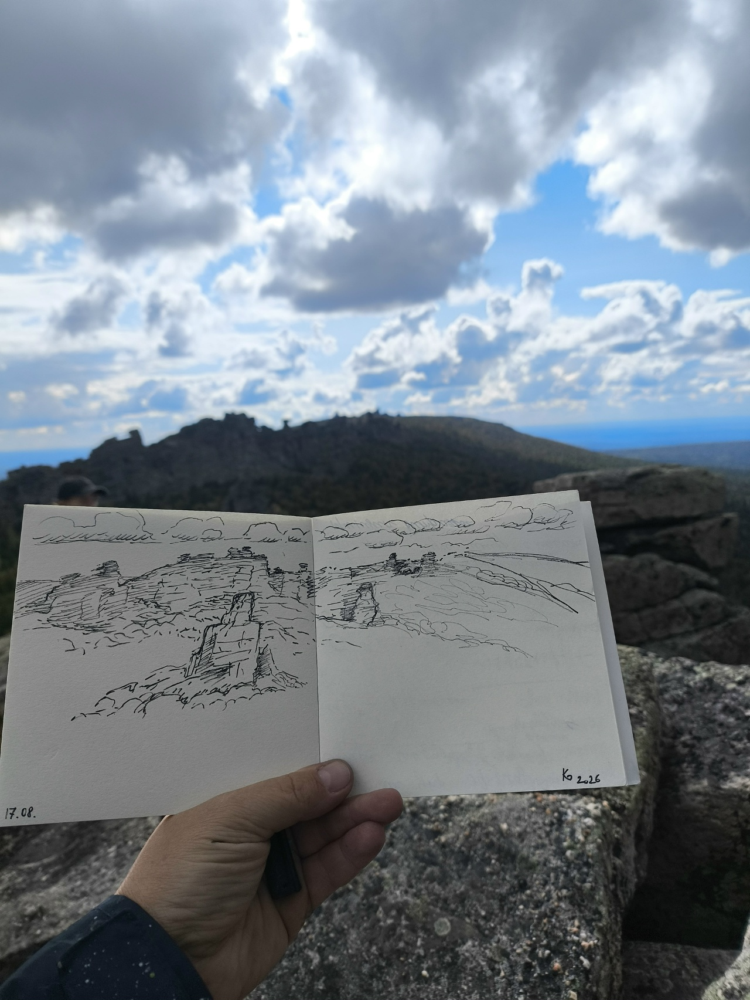
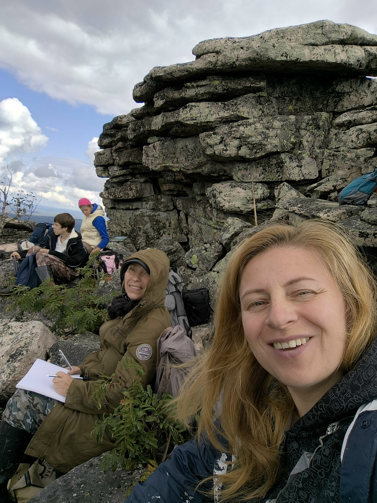
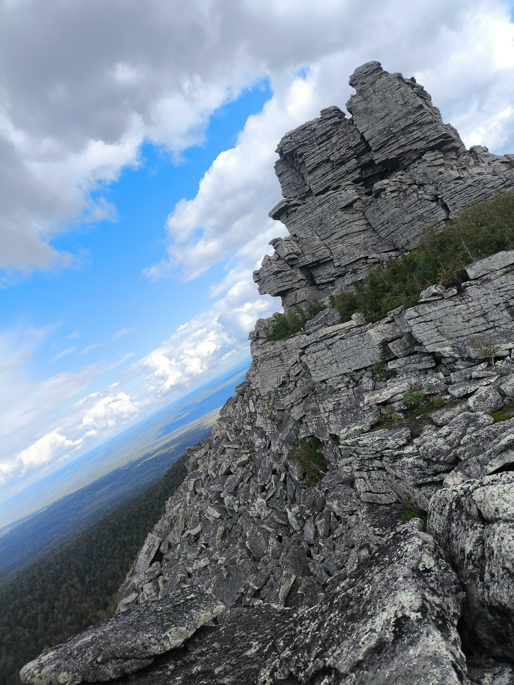
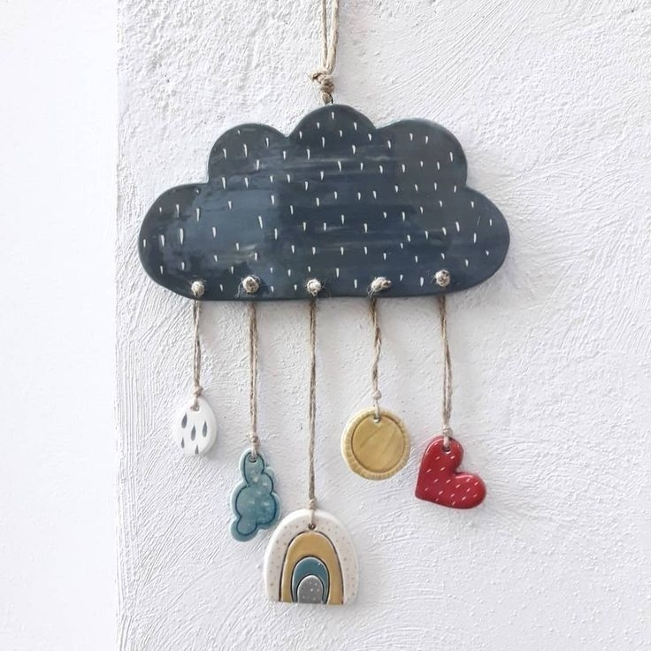
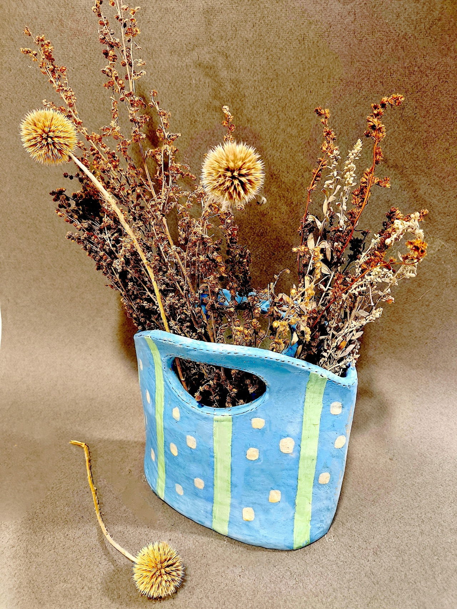

Екатерина Безденежных
Создаю искусство, которое живёт в архитектуре. Соединяю академическую точность и энергию уральской земли. От строгой графики на стенах до тёплой керамики и батика.
О художнике
Для меня искусство — это способ вести диалог со временем и камнем. Выпускница Академии живописи, ваяния и зодчества Ильи Глазунова, я создаю произведения, интегрированные в архитектуру Перми.
Мой город научил меня видеть красоту в строгих промышленных линиях. Теперь я переношу эту графику на масштабные поверхности, превращая глухие стены в новые городские ориентиры. Моя кисть — это мост между холодом бетона и тёплым рассказом.
Академическая база даёт мне свободу: я могу провести линию толщиной в волос на трёхметровой высоте так же уверенно, как пишу камерный холст. Но главный инструмент в моей мастерской — всё ещё рука. Вы увидите мазок кисти в батике и отпечаток пальца на дне керамической чаши. Я верю, что только стопроцентно ручной труд способен наполнить дом тишиной и настоящим теплом.
Каждая моя работа начинается не с эскиза, а с вопроса: какую эмоцию будет испытывать человек, находясь внутри этого цвета?
Искусство начинается с касания
Направления работы
🎨 Монументальное искусство и роспись стен
Перенос авторской графики и живописи на масштабные поверхности. От строгих чертежных линий и сложной перспективы до масштабных декоративных полотен.
🖼️ Авторская интерьерная живопись и батик
Создание уникальных холстов и панно. Каждая картина — законченное произведение, написанное с учётом колористики и атмосферы вашего пространства.
🏺 Художественная керамика
Мои керамические объекты не стремятся к идеальной гладкости. Мне важна память пальцев — следы лепки, шероховатость шамота, асимметрия, которая делает каждое изделие живым. Это контраст с безупречной точностью моей монументальной графики, и в этом — моя главная свобода.
Истории моих проектов
Недавно мы работали в краеведческом музее Кудымкара. Сделали на стене роспись — копию с рисунка П.И. Субботина‑Пермяка, мастера, чье творчество неразрывно связано с этим краем. Вместо того чтобы просто закрасить стены краской, мы превратили их в часть новой композиции. Теперь эти стены говорят с посетителями на новом языке, сохраняя память о прошлом.
Скоро там завершится переоформление всех залов, и мы очень рады участию в этом грандиозном проекте!
Природа — мой главный соавтор
Вдохновение
Меня вдохновляет суровая красота гор. Геометрия скал и бескрайние леса отражаются в моих графических работах. Я выхожу на пленэры с мольбертом, чтобы уловить свет на склонах гор, а затем перенести его в интерьеры.
Академическая база позволяет мне быть дерзкой. Я могу нарисовать тончайшую линию на высоте нескольких метров, сохранив безупречную точность. Но главное — за каждой моей работой стоит концепция. Будь то роспись в несколько десятков квадратных метров или маленькая керамическая скульптура, я вкладываю в них диалог с пространством.



Для меня искусство — это всегда связь с землёй, на которой я стою. И эта связь делает мои работы живыми и настоящими.
Готовые работы

Тарелка «Море»
Фактурная поверхность, напоминающая морскую волну. Уникальное сочетание цвета и формы.
Обсудить заказ
Панно «Древо»
Монументальное панно для гостиной. Подходит для интерьеров в эко-стиле.
Обсудить заказ
Ваза «Осень»
Тёплая осенняя гамма, плавные линии и матовая фактура. Идеально для цветов.
Обсудить заказКаждая форма хранит тепло рук
Мастер-классы
Мастер-класс «Тарелка «Море»»
Создайте свою тарелку с морским узором. Все материалы включены, два обжига.
ЗаписатьсяПриглашаю в мастерскую
Приглашаю вас в мою мастерскую в Перми. Здесь можно увидеть холсты при дневном свете, услышать, как звенит свежая глазурь, и обсудить пространство, которое давно ждёт своего сюжета.
Билет на мастер-класс можно приобрести на сайте Пермской дирекции:
Или напишите мне, чтобы договориться о встрече или обсудить ваш проект:
Заполните поля, скопируйте готовое сообщение и отправьте мне в удобном вам мессенджере.